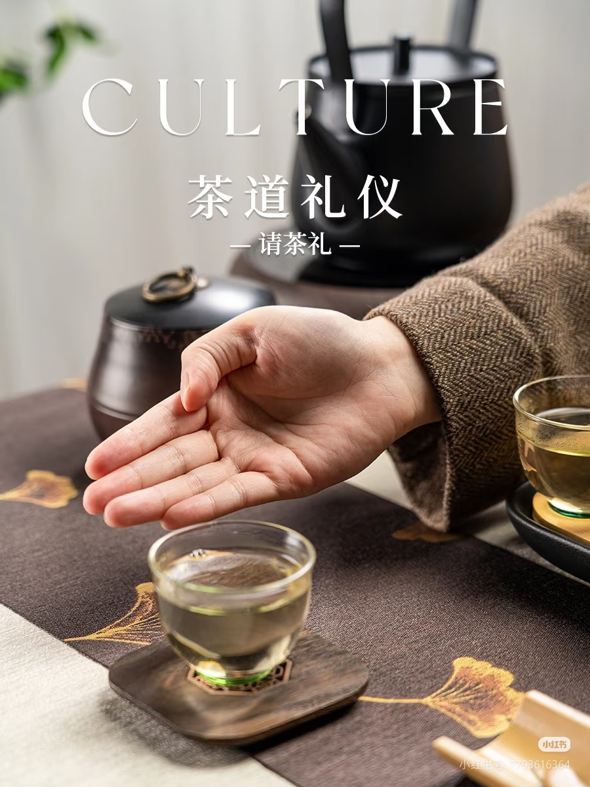
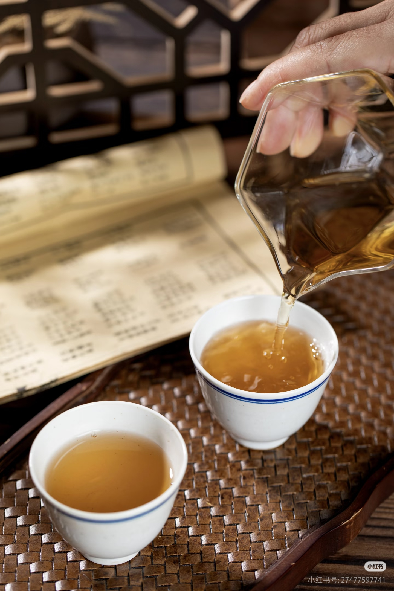
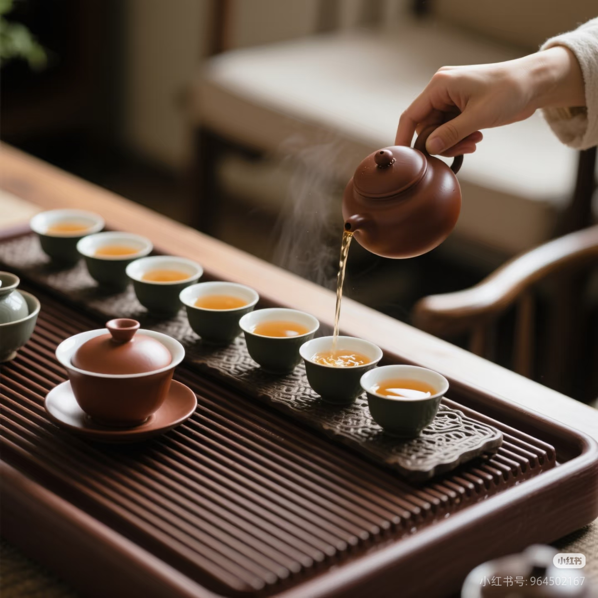
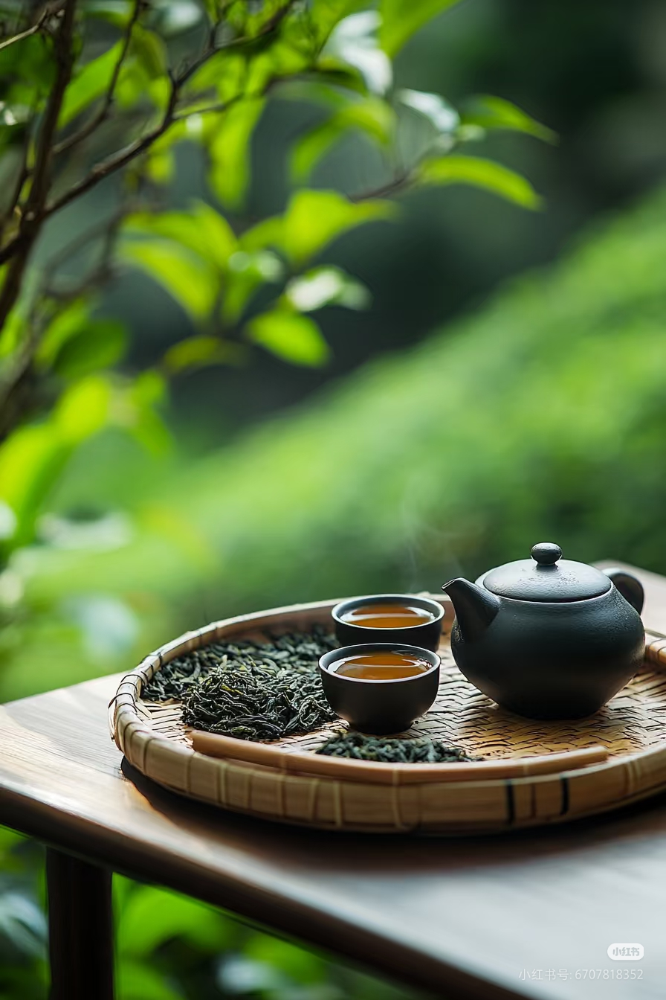

茶的礼仪
一方茶席，礼数周全，感受中式待客之道
叩指礼
当主人倒茶时，客人以食指和中指轻叩桌面，表示谢意。相传是乾隆皇帝微服私访时留下的习俗。

伸掌礼
主人奉茶时，五指并拢，手掌向上，示意客人请用茶。寓意"请"与"尊重"。

斟茶七分满
俗话说"茶满欺人"，斟茶只需七分满，留下三分是人情。既方便客人端杯，也显谦和。
持杯手势
用拇指和食指轻握杯沿，中指托住杯底，称为"三龙护鼎"。杯底朝外，避免手指接触杯口。

斟茶顺序
先尊后卑，先老后少。从主宾开始，按顺时针方向依次斟茶，最后给自己斟茶。

壶嘴不对人
放置茶壶时，壶嘴不要对着客人，这是最基本的尊重。壶嘴对着人，有"请人走"的寓意。